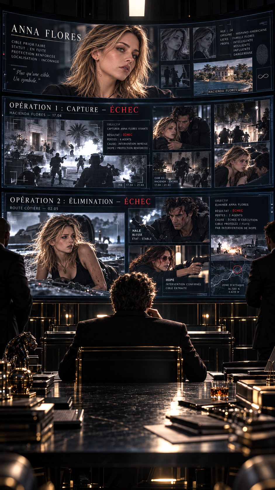
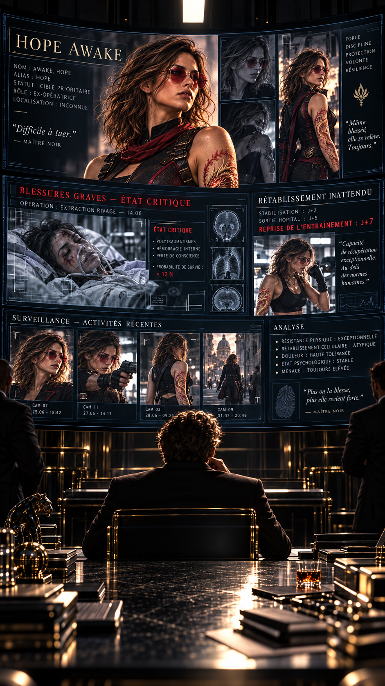
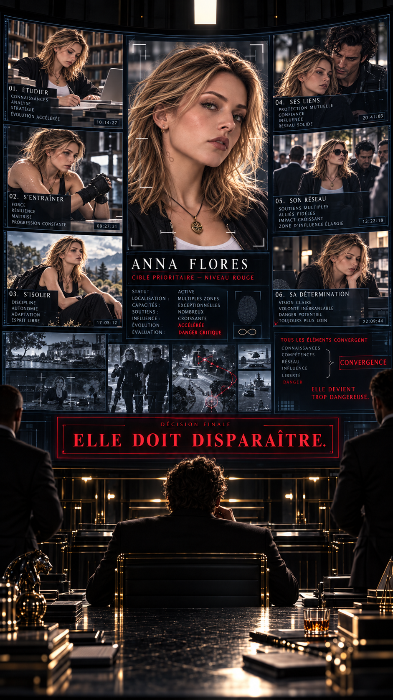
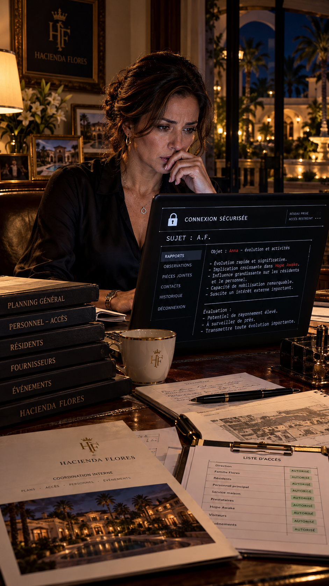
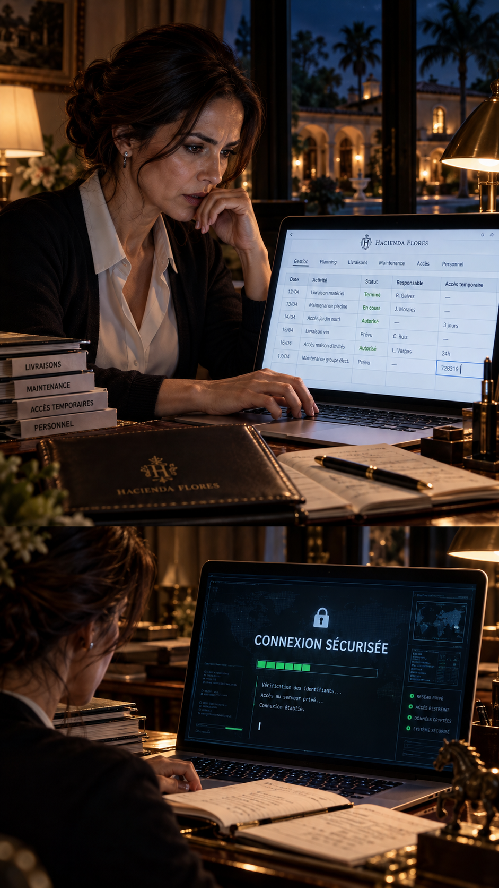
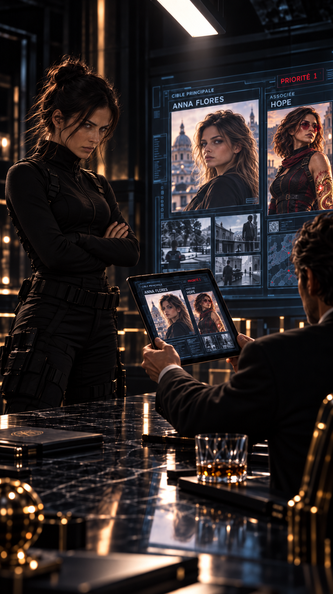

La pièce est plongée dans une obscurité presque totale.
Aucune fenêtre.
Aucun bruit extérieur.
Seulement une longue table noire, éclairée par une lumière blanche tombant du plafond.
Un homme attend.
Immobile.
Devant lui, plusieurs écrans affichent des images de l’hacienda Flores.
Les images se succèdent.
Anna quittant la propriété.
Anna discutant avec Betty.
Anna s’entraînant seule et avec Hale.
Anna avec Lucy.
Anna avec Hope.
Anna devant un écran avec Hale.
Puis une autre photographie.
Anna aux côtés de Max Speedman lors de l’inauguration du NEXUS.
L’homme observe la dernière image quelques secondes.
— Continuez.
Une voix féminine lui répond depuis un écran sécurisé.
Son visage n’apparaît pas.
Seulement une silhouette.
— Son évolution s’est considérablement accélérée depuis l’arrivée d’Hope Awake au Mexique.
L’homme ne bouge pas.
— Des exemples.
Une nouvelle série de dossiers apparaît.
— Il y a encore quelques semaines, Anna Flores ne parlait pratiquement pas français.
Une nouvelle image apparaît.
Anna discute avec Hale.
— Aujourd’hui, elle tient déjà des conversations simples et comprend des échanges beaucoup plus complexes.
— Combien de temps ?
— Quelques jours.
Silence.
— Continuez.
Un autre dossier s’affiche.
— Elle a également commencé un entraînement régulier de self-défense.
Des photographies apparaissent.
Hope corrigeant sa position.
Anna observant.
Reproduisant.
Corrigeant elle-même son mouvement.
— Hope Awake ?
— Principalement.
— Mais Hale participe également à son apprentissage.
Une autre image.
Anna en conversation avec Lucy.
— Elle s’intéresse de plus en plus au travail de sa tante.
— Cybercriminalité ?
— Pas seulement.
La femme marque une pause.
— Justice.
— Manipulation de données.
— Désinformation.
— Recherche d’informations.
— Fonctionnement des réseaux criminels.
L’homme relève légèrement la tête.
— Et IA2 ?
— Elle n’y a pas accès directement.
— Pour l’instant.
La femme ne répond pas.
— Pour l’instant.
Une nouvelle série d’images apparaît.
Betty Flores.
Root Tempass.
Max Speedman.
Peter Evanos.
Lucy Adverse.
Hope Awake.
Hale.
L’homme les regarde une à une.
— Elle les rassemble.
— Pardon ?
Il désigne Anna.
— Vous m’avez transmis des centaines de rapports sur ses capacités.
— Sur ce qu’elle apprend.
— Sur ce qu’elle comprend.
— Sur ses déplacements.
Il pose lentement les mains sur la table.
— Mais vous n’avez pas compris l’information la plus importante.
— Regardez autour d’elle.
Science.
Information.
Histoire.
Journalisme.
Technologie.
Combat.
Protection.
Anna ne possède pas toutes ces compétences.
Elle n’a pas besoin de les posséder toutes.
Elle a accès à ceux qui les possèdent.
Elle apprend. Elle observe. Elle relie.
— Une généticienne disposant de moyens financiers et scientifiques considérables.
— Une enquêtrice ayant accès à l’une des intelligences artificielles les plus avancées que nous connaissions.
— Une femme capable de comprendre le passé et d’en déduire les conséquences futures.
— Un journaliste capable de faire parvenir une information presque partout dans le monde.
— Un inventeur capable de créer ce qui n’existe pas encore.
Puis Hope.
Il s’arrête plus longtemps sur son image.
— Et elle.
La voix féminine murmure :
— Une restauratrice… mais surtout un maître en arts martiaux.
— Oui.
Enfin Hale.
— Son garde du corps personnel.
— Il me fait fortement penser à une Sentinelle.
— Présent auprès d’Anna depuis sa naissance.
Il se redresse.
— Anna Flores n’est pas dangereuse parce qu’elle sait se battre.
— Elle n’est pas dangereuse parce qu’elle apprend rapidement.
— Elle n’est même pas dangereuse parce qu’elle possède des ressources considérables.
Il marque une pause.
— Elle devient dangereuse parce que toutes ces choses commencent à converger vers elle.
La femme ne répond rien.
— Elle apprend des uns.
— Elle observe les autres.
— Et surtout…
Il regarde une photographie prise pendant l’inauguration du NEXUS.
Tous sont réunis.
Anna se trouve presque au milieu du groupe.
Elle crée des liens.

Une porte s’ouvre derrière lui.
Un homme entre.
Il s’incline légèrement.
— Maître.
— Le rapport de l’hacienda Flores.
L’homme pose une tablette sur la table.
— L’opération a échoué.
Aucune réaction.
— Combien ?
— Tous neutralisés.
— Morts ?
— Non.
Cette fois, le Maître Noir lève les yeux.
— Non ?
— Hope Awake était présente.
Silence.
L’homme poursuit :
— Elle a empêché l’élimination d’Anna Flores.
— Et les autres ?
— Hale a été blessé.
— Betty Flores également visée.
— Hope a pris le projectile à sa place.

Le Maître Noir regarde l’image de Hope.
— Son état ?
— Critique immédiatement après l’attaque.
L’homme hésite.
— Une semaine plus tard, elle aurait repris l’entraînement.
Un très léger sourire apparaît sur le visage du Maître Noir.
— Hope…
Sûrement le Maître Unique.
Il ne semble ni surpris ni réellement contrarié.
Presque admiratif.
— Toujours aussi difficile à tuer.
— Et nos hommes ?
— Certains ont été récupérés.
— Les autres ?
— Disparus avant l’arrivée officielle des forces de l’ordre.
Le Maître Noir se lève lentement.
— Deux échecs.
Personne ne répond.
— Première opération : capture.
— Échec.
Il fait quelques pas.
— Deuxième opération : élimination.
— Échec.
Il s’arrête.
— Nous avons sous-estimé son environnement.

Sur l’écran, Anna réapparaît.
Cette fois, elle est seule.
Assise dans une bibliothèque.
Un livre ouvert devant elle.
— Lors de la première opération, je pensais qu’elle pouvait encore être récupérée.
L’homme près de lui demande :
— Récupérée ?
— Éduquée autrement.
— Guidée.
— Convaincue.
Il regarde Anna.
— Peut-être même amenée à comprendre notre vision du monde.
Puis son expression change.
— Ce temps est terminé.
La femme sur l’écran intervient :
— Pourquoi ?
Il se retourne vers elle.
— Parce qu’Anna Flores n’est plus isolée.
Il indique Hope.
— Elle a rencontré celle qu’elle n’aurait jamais dû rencontrer aussi tôt.
Lucy.
— Elle admire une femme obsédée par la justice et la vérité.
Max.
— Elle veut devenir journaliste.
Root.
— Elle commence à côtoyer une femme qui pense le monde en causes et conséquences.
Peter.
— Elle accède progressivement à une technologie que très peu de gouvernements possèdent.
Betty.
— Et sa mère lui donnera absolument tout ce dont elle aura besoin.
Il regarde de nouveau Anna.
— Plus nous attendrons, plus elle apprendra.
— Plus elle apprendra, plus elle posera de questions.
— Plus elle posera de questions…
— Plus elle se rapprochera de nous.
La femme demande :
— Quelle est votre décision ?
Le Maître Noir ne répond pas immédiatement.
Il observe Anna encore quelques secondes.
— Nous voulions savoir ce qu’elle pouvait devenir.
Puis il murmure :
— Je crois que nous commençons à le comprendre.
L’homme à ses côtés attend.
Elle doit disparaître.
La phrase tombe sans colère.
Sans haine.
Comme une simple conclusion logique.
La femme reste silencieuse.
— Définitivement ?
— Oui.
Puis il ajoute :
— Mais plus avec nos hommes.
L’homme comprend.
Son expression change légèrement.
— Vous voulez faire appel au Fantôme ?
Le Maître Noir se retourne.
— Faites-la venir.
Personne ne se méfie vraiment d’Isabel Ortega.
Et c’est précisément pour cette raison qu’elle est si efficace.
Quarante-deux ans.
Employée à l’hacienda Flores depuis presque onze ans.
Officiellement responsable de la coordination interne de la propriété.

Une femme discrète.
Toujours souriante.
Toujours disponible.
Betty lui fait confiance.
Anna la connaît depuis son enfance.
Hale lui-même n’a jamais eu de raison sérieuse de se méfier d’elle.
Isabel ne fait pas partie de la sécurité.
C’est encore mieux.
Elle n’a pas accès à toutes les données sensibles.
Mais elle a accès à suffisamment d’informations.
Qui travaille.
À quelle heure.
Quelle entreprise intervient.
Quand une caméra doit être entretenue.
Quand une équipe change.
Quels invités sont attendus.
Quand Betty voyage.
Quand Anna quitte la propriété.
Et surtout…
qui entre désormais dans sa vie.

Ce soir-là, Isabel est seule dans son bureau.
Elle ouvre son ordinateur.
Un banal tableau de gestion apparaît.
Elle saisit une série de chiffres dans une cellule vide.
TABLEAU DE GESTION — FERMÉ
INTERFACE SECONDAIRE — ACTIVE
CONNEXION SÉCURISÉE
Isabel attend.
Puis commence son rapport.
SUJET : A.F.
Isabel hésite avant d’écrire la suite.
Relation avec H. Awake : rapprochement très rapide.
Elle reste quelques secondes devant l’écran.
Puis ajoute :
H. Awake semble également développer un attachement inhabituel envers le sujet.
Elle envoie le rapport.
Un message apparaît presque immédiatement.
POURQUOI « INHABITUEL » ?
Isabel réfléchit.
Puis répond :
Awake prend des risques qui ne correspondent pas à son comportement habituel.
Nouveau message.
EXEMPLE.
Isabel tape :
Elle a été grièvement blessée en protégeant Betty Flores après avoir sécurisé Anna.
Silence.
Puis :
CONTINUEZ L’OBSERVATION.
Isabel ferme la connexion.
Elle reste devant son écran quelques secondes.
Pour la première fois depuis longtemps, ses mains tremblent légèrement.
Au début :
horaires, déplacements, noms, rapports.
Puis Anna a grandi.
Elle a ri avec Isabel.
Elle lui a raconté ses études.
Ses rêves.
Ses premières envies d’indépendance.
Isabel sait désormais à quoi servent réellement ses rapports.
Parce qu’une chose commence à la déranger.
Elle observe Anna depuis des années.
Au début, ce n’était qu’un travail.
Puis Anna avait grandi.
Et désormais…
Isabel savait parfaitement à quoi servaient ses rapports.
Elle ferme les yeux.
— Qu’est-ce que j’ai fait ?
Une femme s’entraîne seule.
Un couteau tourne entre ses doigts.
Puis disparaît dans sa manche.
Un bruit derrière elle.
Elle ne se retourne même pas.
— Tu pourrais frapper avant d’entrer.
L’homme resté près de la porte répond :
— Le Maître veut te voir.
La femme s’immobilise.
— Pourquoi ?
— Une mission.
Elle soupire.
— J’étais en vacances.
— Apparemment plus maintenant.
Elle se retourne enfin.
Amy.
Calme.
Souriante.
Presque amusée.
— Qui ?
L’homme lui tend une tablette.
Amy regarde l’écran.
Une photographie apparaît.
Anna Flores.
Son sourire disparaît.
Elle fait défiler quelques informations.
Puis une deuxième photographie.
Hope Awake.
Cette fois, Amy s’immobilise complètement.
— Intéressant…
L’homme demande :
— Tu la connais ?
Amy relève les yeux.
— Laquelle ?
— Hope Awake.
Amy lui rend la tablette.
— Tout le monde connaît Hope Awake.
— Ce n’est pas ce que je demandais.
Amy sourit.
— Alors pose de meilleures questions.
Elle passe devant lui.
— Où est le Maître ?

Quelques minutes plus tard, Amy entre dans la salle noire.
Le Maître Noir l’attend.
La photographie d’Anna occupe l’écran principal.
Amy la regarde.
— Elle est jeune.
— Dix-neuf ans.
— Et elle mérite que tu interrompes mes vacances ?
— Oui.
SUJET
ANNA FLORES
ÂGE — 19 ANS
APPRENTISSAGE — ACCÉLÉRÉ
ENTOURAGE — BETTY / LUCY / ROOT / MAX / PETER / HOPE / HALE
OPÉRATIONS PRÉCÉDENTES — 2
RÉSULTAT — 2 ÉCHECS
Amy parcourt le dossier.
Apprentissage accéléré.
Betty.
Lucy.
Max.
Peter.
Root.
Hale.
Hope.
Amy s’arrête sur ce dernier nom.
Mais son visage reste parfaitement neutre.
— Deux équipes ont déjà échoué ?
— Oui.
Amy sourit.
— Et maintenant tu m’appelles.
— Maintenant, je t’appelle.
Amy continue de lire.
— Vous vouliez d’abord l’enlever.
— Oui.
— Puis la tuer.
— Oui.
Amy referme le dossier.
— Et qu’est-ce que tu veux exactement de moi ?
Le Maître Noir la fixe.
— Observe-la.
Amy hausse un sourcil.
— Seulement ?
— Je veux savoir ce qu’elle est en train de devenir.
— Et si tes inquiétudes sont justifiées ?
Un silence.
Tu l’élimines.
Amy regarde de nouveau la photographie.
Une jeune femme souriante.
Apparemment ordinaire.
Elle pose deux doigts sur l’écran.
Puis murmure :
— Anna Flores…
Le Maître Noir l’observe.
Amy sourit doucement.
Voyons donc ce qui te rend si dangereuse.